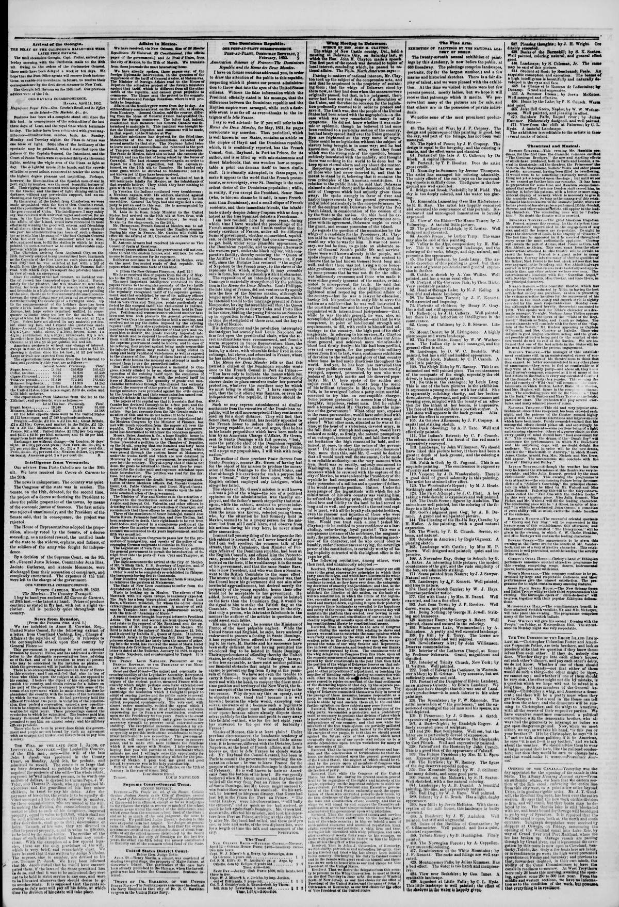

The French honor to induce tho acceptance of the young ropublic
https://www.loc.gov/resource/sn83030313/1852-04-21/ed-1/?sp=3

See the original pageVer la página original
According to The New York Herald on April 21, 1852, the Dominican Republic's leader awaited a response regarding French proposals while noting that American Chargé d'Affaires Mr. Green had been sent with full powers. The newspaper's correspondent stated that while the Dominican chief accused Mr. Green's mission of seeking annexation, the correspondent observed that Green never aimed for annexation during his stay. Additionally, the excerpt attributes Green's appointment to a Whig administration stratagem involving a political opponent's son, while also mentioning failed British intrigues and the Dominican Minister of Foreign Affairs, Dr. Caminero.
A tenor de The New York Herald del 21 de abril de 1852, el mandatario dominicano aguardaba respuesta a propuestas formuladas por Francia, observando que el encargado de negocios estadounidense, Sr. Green, había sido acreditado con plenos poderes. El corresponsal del diario señaló que, aunque el jefe dominicano imputaba a la misión de Green designios de anexión, jamás se advirtió en su gestión tal pretensión durante su estancia. El extracto atribuye la designación de Green a una estratagema del gobierno whig ligada al hijo de un rival político, aludiendo asimismo a intrigas británicas fallidas y a la intervención del ministro de Relaciones Exteriores dominicano, Dr. Caminero.
Where this standsEn qué punto está
The full text of this article is still being prepared. Until it is ready, this page carries a summary, the passage found on the page, and the link to the original, which is always one click away.El texto completo de este artículo aún se está preparando. Hasta que esté listo, esta página lleva un resumen, el pasaje encontrado en la página y el enlace al original, que siempre está a un clic.
The passage this summary was written fromEl pasaje del que se escribió este resumen
The passage where this article was found, copied from the newspaper page itself, reading errors and all. This is exactly what the summary above is based on.El pasaje donde se encontró este artículo, copiado de la propia página del periódico, con sus errores de lectura y todo. Esto es exactamente aquello en lo que se basa el resumen de arriba.
the French honor to induce tho acceptance of
the young ropublic, tout net, aud urges, that ho has
in his bands propositions which have been made to
him by an American Charge d' Affairs, Mr (ireen,
sent to Santo Domingo with full powers, but,"
soys the patriotic chief of tho Dominican republic,
as long as there is a spark of hope that France
wKl accept uiy propositions, I will wait with resig
nation."
The author of those precious Stale docreos from
Santo Domingo, accuses Mr. Green of having had
for the object of his mission to produoe tho annex
ation of Santo Domingo to tho United States, and
that although his exertions for such a purpose had
been "brutal," they had been oi>cn, while the
English cabinet employed only intrigues, which
altogether failed.
The objects of Mr. (Jreen's mission is woll known
it was a job of the whigs tho son of a political
opponent to the administration was thereby em
ployed, and the fat her's mouth stopped by t hut strat
agem, h bile the cabinet, anxious to procure infor
mation about a republic of wiiicli scarcely more
than the name was known, selected young (treen,
who, by the situation he had formerly neld in
Mexico, seemed to be a proper person for tho mis
sion; but from all 1 ooulJ learn, and observe from
his actions during his stay here, ho never uimed
alter annexation.
_ 1 cannot tell you any thing of the intrigues the Bri
tish cabinet is accused of, as I never heard of any
but 1 can well recollect tho common talk of tho
streets, that Dr. Carmiuoro, then Minister of For
eign Affairs of the Dominican republic, had bcon at
How to cite this articleCómo citar este artículo
The New York Herald. (1852). New York [N.Y.], April 21, 185221 de abril de 1852. DR in the American PressRD en la Prensa Norteamericana. Library of Congress, Chronicling America: https://www.loc.gov/resource/sn83030313/1852-04-21/ed-1/?sp=3
ReferencesReferencias
Library of Congress, Chronicling America: The New York Herald, April 21, 185221 de abril de 1852.
Send an observationEnviar una observación
Does this article connect with your family, your town, or something you know? Did we get something wrong? Write to us. Observations go to the editor's inbox and are read by a person.¿Este artículo conecta con su familia, su pueblo o algo que usted conoce? ¿Nos equivocamos en algo? Escríbanos. Las observaciones llegan al buzón del editor y las lee una persona.
Send observationEnviar observación